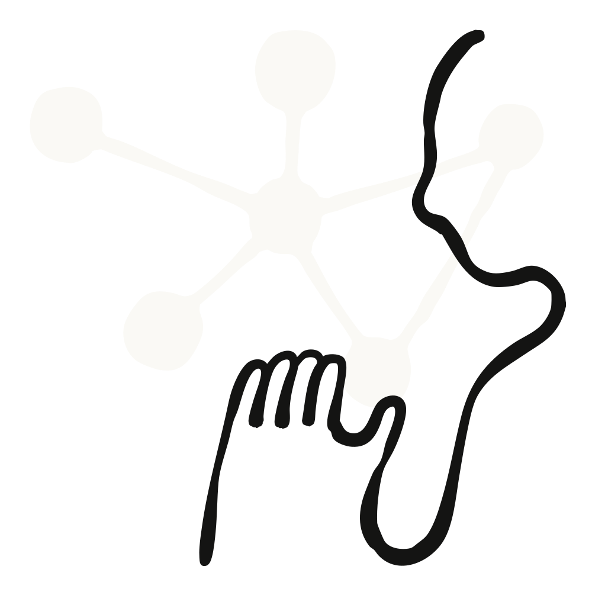
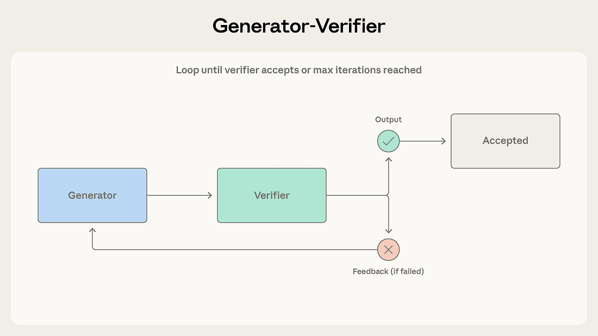
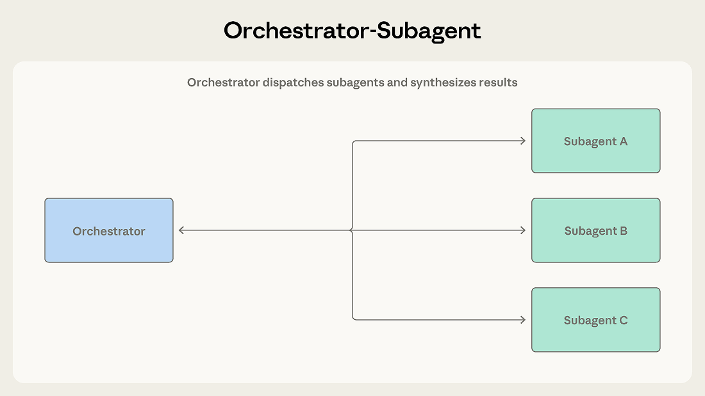
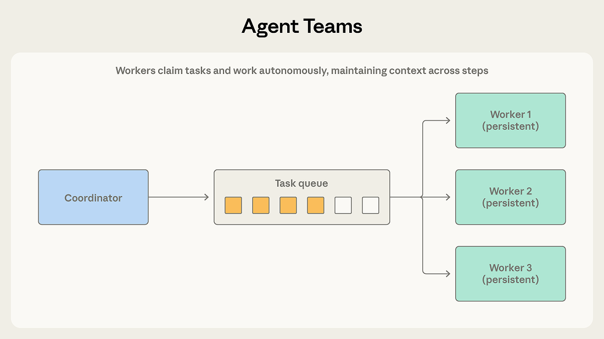
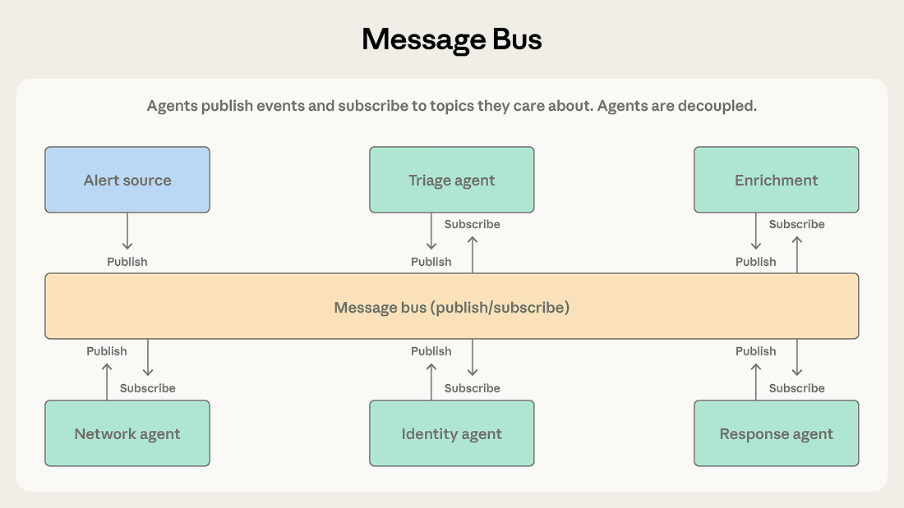
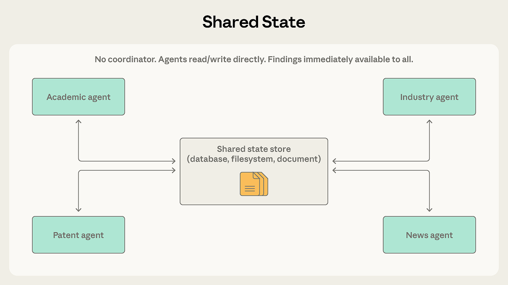
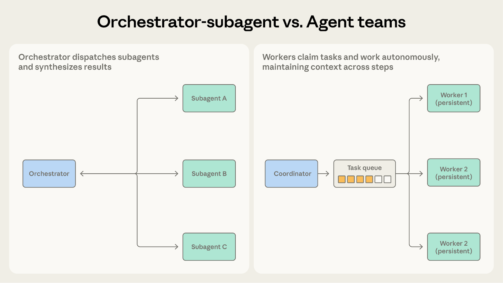
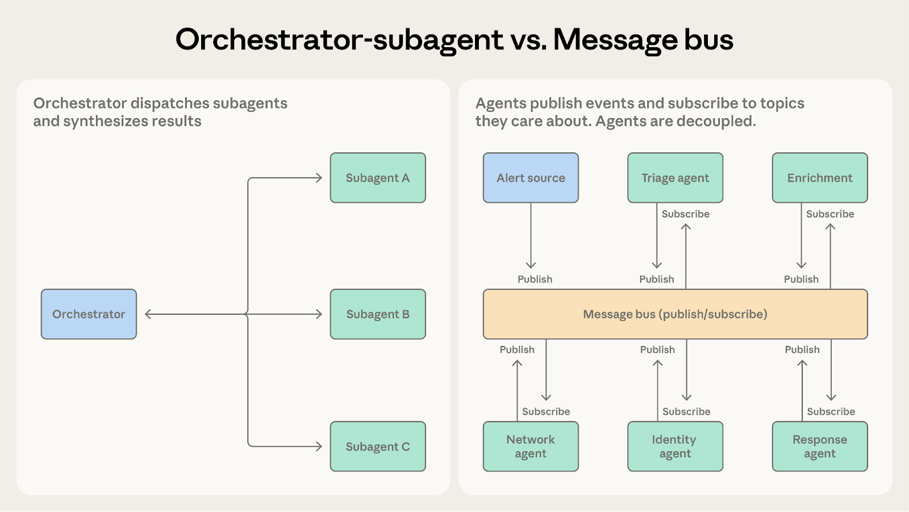
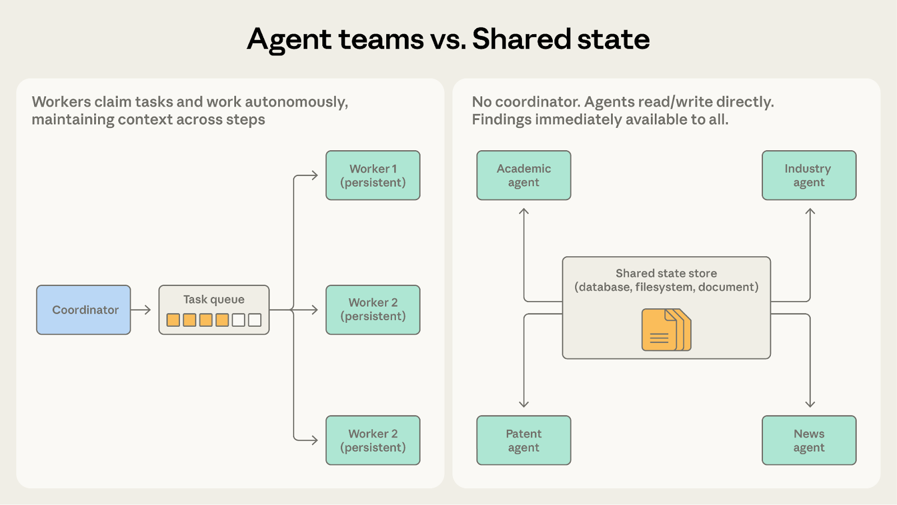
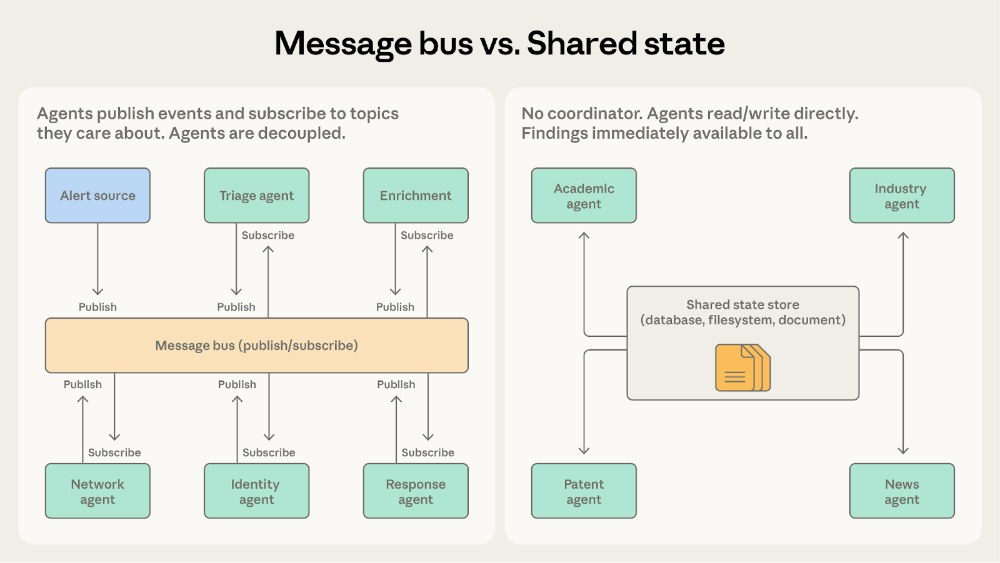

多智能体协调五种模式及选用时机
译文 AI 逐段翻译

多智能体协调模式：五种方法及适用时机
五种多智能体协调模式、其权衡，以及何时从一种演变为另一种。
在之前的一篇文章中，我们探讨了多智能体系统在何时提供价值，以及单个智能体何时是更好的选择。这篇文章面向那些已做出决策，现在需要决定哪种协调模式适合其问题的团队。
我们看到团队选择模式时，往往基于听起来复杂的东西，而不是基于问题本身。我们建议从最简单的可行模式开始，观察其困难之处，并从中演变。本文考察五种模式的机制和局限性：
- 生成器-验证器，适用于具有显式评估标准的关键质量输出
- 协调器-子智能体，适用于具有明确子任务的清晰任务分解
- 智能体团队，适用于并行、独立、长期运行的子任务
- 消息总线，适用于事件驱动型管道及不断增长的智能体生态系统
- 共享状态，适用于智能体基于彼此发现进行协作的工作
模式1：生成器-验证器
这是最简单的多智能体模式，也是部署最多的模式之一。我们在之前的文章中将其称为验证子智能体模式，这里我们使用更广泛的生成器-验证器框架，因为生成器不必是协调器。
工作原理

生成器接收任务并产生初始输出，然后传递给验证器进行评价。验证器检查输出是否满足所需标准，要么接受其为完成，要么拒绝并附上反馈。如果被拒绝，反馈会路由回生成器，生成器利用反馈来产生修订尝试。此循环持续，直到验证器接受输出或达到最大迭代次数。
适用场景
考虑一个生成客户工单邮件回复的支持系统。生成器根据产品文档和工单上下文生成初始回复。验证器根据知识库检查准确性，根据品牌指南评估语气，并确认回复处理了提出的每个问题。未通过的检查会返回给生成器，并附带指明具体问题的反馈，例如错误归于定价层级的功能或工单问题未得到答复。
当输出质量至关重要且评估标准可以明确时，使用此模式。它对于代码生成（一个智能体编写代码，另一个编写并运行测试）、事实核查、基于规则评分、合规验证，以及任何错误输出成本高于额外生成周期的领域都非常有效。
局限之处
验证器的好坏取决于其标准。一个仅被告知检查输出是否良好、没有进一步标准的验证器，会机械地批准生成器的输出。团队最常失败于实现循环而未定义验证的含义，这造成了质量控制假象而没有实质。（我们在前一篇文章中讨论过这个“早期胜利”问题。）
该模式还假设生成和验证是可分离的技能。如果评估创造性方法像生成一样困难，验证器可能无法可靠地发现问题。
最后，迭代循环可能会停滞。如果生成器无法解决验证器的反馈，系统会振荡而不收敛。限制最大迭代次数并设置回退策略（升级给人类，返回带有注意事项的最佳尝试）可防止这成为无限循环。
模式2：协调器-子智能体
层级定义了此模式。一个智能体充当团队负责人，规划工作、委派任务并综合结果。子智能体处理具体职责并汇报。
工作原理

主智能体接收任务并决定如何处理。它可能直接处理某些子任务，同时将其他子任务分派给子智能体。子智能体完成工作并返回结果，协调器将结果综合为最终输出。
Claude Code使用此模式。主智能体自己编写代码、编辑文件和运行命令，当需要搜索大型代码库或调查独立问题时，在后台分派子智能体，以便工作继续，同时结果流回。每个子智能体在其自己的上下文窗口中操作，并返回提炼后的发现。这使协调器的上下文保持专注于主要任务，而探索并行进行。
适用场景
考虑一个自动化代码审查系统。当收到拉取请求时，系统需要检查安全漏洞、验证测试覆盖率、评估代码风格和架构一致性。每项检查都是不同的，需要不同的上下文，并产生清晰的输出。协调器将每项检查分派给专门的子智能体，收集结果，并综合统一审查。
当任务分解清晰且子任务相互依赖最小时，使用此模式。协调器保持对整体目标的连贯视图，而子智能体专注于具体职责。
局限之处
协调器成为信息瓶颈。当子智能体发现与另一个子智能体工作相关的信息时，该信息必须通过协调器传回。如果安全子智能体发现了影响架构子智能体分析的认证缺陷，协调器必须识别这种依赖并适当地路由信息。经过几次此类交接后，关键细节常常被丢失或概括掉。
顺序执行也限制了吞吐量。除非显式并行化，否则子智能体一个接一个运行，这意味着系统付出多智能体令牌成本而没有速度优势。
模式3：智能体团队
当工作分解为可以长时间独立进行的并行子任务时，编排者-子代理模式可能变得不必要的限制性。
工作原理

协调器生成多个工作代理作为独立进程。成员从共享队列中领取任务，在多步骤中自主处理，并发出完成信号。
与编排者-子代理模式的不同之处在于工作代理的持久性。编排者为单一有界子任务生成子代理，子代理在返回结果后终止。成员在多个分配任务中保持存活，积累上下文和领域专业化，从而提高其随时间的表现。协调器分配工作并收集结果，但不会在任务之间重置工作代理。
适用场景
考虑将大型代码库从一个框架迁移到另一个框架。成员可以独立迁移每个服务，包括其依赖、测试套件和部署配置。协调器将每个服务分配给一个成员，每个成员自主完成迁移：依赖更新、代码更改、测试修复、验证。协调器收集完成的迁移并运行整个系统的集成测试。
当子任务独立且受益于持续的多步骤工作时，使用这种模式。每个成员积累其领域的上下文，而不是每次分配时从头开始。
不足之处
独立性是关键要求。与编排者-子代理模式不同，编排者可以在子代理之间进行调解并路由信息，成员自主操作，难以共享中间发现。如果一个成员的工作影响另一个成员，双方都无法察觉，其输出可能冲突。
完成检测也更困难。由于成员自主工作且时长不一，协调器必须处理部分完成的情况，例如一个成员两分钟完成，而另一个需要二十分钟。
共享资源加剧了这两个问题。当多个成员操作同一代码库、数据库或文件系统时，两个成员可能编辑同一文件或做出不兼容的更改。这种模式需要仔细的任务划分和冲突解决机制。
模式4：消息总线
随着代理数量增加和交互模式变得复杂，直接协调变得难以管理。消息总线引入了共享通信层，代理在其中发布和订阅事件。
工作原理

代理通过两个原语交互：发布和订阅。代理订阅其关心的话题，路由器传递匹配的消息。具有新能力的新代理可以开始接收相关工作，而无需重新连接现有连接。
适用场景
安全运营自动化系统展示了这种模式的优点。警报来自多个来源，分流代理按严重性和类型进行分类，将高严重性网络警报路由到网络调查代理，将凭据相关警报路由到身份分析代理。每个调查代理可能会发布丰富请求，由上下文收集代理满足。调查结果流向响应协调代理，由其确定适当的行动。
这种流水线适合消息总线，因为事件从一个阶段流向下一个阶段，团队可以在威胁类别演变时添加新的代理类型，并且团队可以独立开发和部署代理。
对于事件驱动的流水线，当工作流从事件中产生而非预定顺序，且代理生态系统可能增长时，使用这种模式。
不足之处
事件驱动通信的灵活性使追踪变得更加困难。当警报在五个代理中触发级联事件时，理解发生了什么需要仔细的日志记录和关联。调试比遵循编排者的顺序决策更难。
路由准确性也至关重要。如果路由器错误分类或丢弃事件，系统会静默失败，不处理任何事情但从不崩溃。基于LLM的路由器提供语义灵活性，但也引入了自身的故障模式。
模式5：共享状态

先前模式中的编排者、团队负责人和消息路由器都集中管理信息流。共享状态通过让代理通过所有代理可直接读写的持久存储进行协调，移除了中间人。
工作原理
代理自主操作，读取和写入共享数据库、文件系统或文档。没有中央协调器。代理检查存储中的相关信息，对其采取行动，并将发现写回。工作通常在初始化步骤用问题或数据集填充存储时开始，并在满足终止条件时结束：时间限制、收敛阈值，或指定代理确定存储包含足够答案。
适用场景
考虑研究综合系统，其中多个代理调查复杂问题的不同方面。一个探索学术文献，另一个分析行业报告，第三个审查专利申请，第四个监控新闻报道。每个代理的发现可能为其他代理的调查提供信息。学术文献代理可能发现一位关键研究员，其公司行业代理应更仔细地检查。
使用共享状态，发现直接进入存储。行业代理可以立即看到学术代理的发现，而无需等待协调器路由信息。代理在彼此的工作基础上构建，共享存储成为不断发展的知识库。
共享状态还消除了协调器作为单点故障的问题。如果任何一个代理停止，其他代理继续读写。在编排者-子代理和消息总线系统中，协调器或路由器故障会停止一切。
不足之处
没有明确的协调，代理可能会重复工作或采用相互矛盾的方法。两个代理可能独立调查同一条线索。代理交互产生系统行为，而不是自上而下的设计，这使得结果更不可预测。
更困难的失败模式是反应性循环。例如，代理A写下一个发现，代理B读取它并写下后续，代理A看到后续并回应。系统不断消耗令牌在未收敛的工作上。重复工作和并发写入有已知的工程修复（锁定、版本控制、分区）。反应性循环是行为问题，需要一流的终止条件：时间预算、收敛阈值（N个周期内无新发现），或指定代理负责决定存储中是否包含足够答案。将终止视为事后考虑的系统往往会无限循环，或者当某个代理的上下文填满时任意停止。
选择并在模式之间演进
正确的模式取决于关于系统的一些结构性问题。在我们之前的文章中，我们主张上下文中心的分解，即根据每个代理需要的上下文而不是其工作类型来划分工作。这一原则也适用于此。这些模式在管理上下文边界和信息流方面有所不同。
编排器-子代理 vs. 代理团队

两者都涉及协调者向其他代理分派工作。问题是工作者需要维持其上下文多长时间。
- 选择编排器-子代理 当子任务短小、聚焦且产生清晰输出时。代码审查系统在这里运行良好，因为每个检查运行分析、生成报告，并在一次有界调用中返回。子代理不需要在多个周期中携带上下文。
- 选择代理团队 当子任务受益于持续的、多步骤的工作时。代码库迁移适合这里，因为每个团队成员对其分配的服务产生真正的熟悉：依赖图、测试模式、部署配置。这种积累的上下文以一次性分派无法复制的方式提高性能。
当子代理需要在调用之间保留状态时，代理团队是更好的选择。
编排器-子代理 vs. 消息总线

两者都可以处理多步骤工作流。问题是工作流结构的可预测性如何。
- 选择编排器-子代理 当步骤序列事先已知时。代码审查系统遵循固定管道：接收PR，运行检查，综合结果。
- 选择消息总线 当工作流从事件中出现，并可能根据发现的内容而变化时。安全运营系统无法预测将到达哪些警报或它们需要哪些调查路径。新的警报类型可能出现，需要新的处理。消息总线通过将事件路由到有能力的代理而不是遵循预定顺序来适应这种变化。
随着编排器中处理越来越多的各种情况的条件逻辑积累，消息总线使路由明确且可扩展。
代理团队 vs. 共享状态

两者都涉及自主工作的代理。问题是代理是否需要彼此的发现。
- 选择代理团队 当代理在不交互的独立分区上工作时。代码库迁移适合这里，因为每个团队成员处理其服务，协调者在最后合并结果。
- 选择共享状态 当代理的工作是协作性的，发现应在它们之间实时流动时。研究综合系统是更好的匹配，因为学术代理发现关键研究者立即与行业代理的调查相关。
一旦团队成员需要相互沟通而不仅仅分享最终结果，共享状态使其更自然。
消息总线 vs. 共享状态

两者都支持复杂的多代理协调。问题是工作是作为离散事件流动还是积累到共享知识库中。
- 选择消息总线 当代理在管道中对事件做出反应时。安全运营系统按阶段处理警报，每个事件在完成之前触发下一个。该模式在将事件路由到有能力的代理方面效率高。
- 选择共享状态 当代理随时间在积累的发现上构建时。研究综合系统持续收集知识。代理反复返回存储，看到其他人发现了什么，并调整他们的调查。
消息总线仍有一个路由器，这意味着一个中央组件决定事件去哪里。共享状态是去中心化的。如果消除单点故障是优先事项，共享状态更完全地提供了这一点。
如果消息总线系统中的代理发布事件以共享发现而不是触发动作，则共享状态更适合。
入门
生产系统通常结合模式。常见的混合使用编排器-子代理进行整体工作流，并共享状态进行协作密集的子任务。另一种使用消息总线进行事件路由，并以代理团队风格的工作者处理每种事件类型。这些模式是构建块，不是互斥的选择。
下表总结了每种模式何时适用。
| 情况 | 模式 |
|---|---|
| 质量关键输出、明确评估标准 | 生成器-验证器 |
| 清晰任务分解，有界子任务 | 编排器-子代理 |
| 并行工作负载，独立长时间运行的子任务 | 代理团队 |
| 事件驱动管道，不断增长的代理生态系统 | 消息总线 |
| 协作研究，代理共享发现 | 共享状态 |
| 要求无单点故障 | 共享状态 |
对于大多数用例，我们建议从编排器-子代理开始。它以最少的协调开销处理最广泛的问题。观察其不足之处，然后根据具体需求演进到其他模式。
在接下来的文章中，我们将结合生产实现和案例研究，深入探讨每种模式。关于何时值得投资多智能体系统的背景信息，请参阅构建多智能体系统：何时以及如何使用它们。
致谢
由卡拉·菲利普斯撰写，感谢尤金·严、吉里·德容赫、塞缪尔·韦勒和埃里克·S的贡献。
未找到项目。
0/5
电子书
常见问题
未找到项目。
相关文章
探索更多产品新闻和针对使用Claude构建团队的实践建议。

2026年8月6日
千年和Anthropic正在使用Claude构建数字风险分析师
企业AI
千年和Anthropic正在使用Claude构建数字风险分析师
千年和Anthropic正在使用Claude构建数字风险分析师

2026年7月24日
Claude模型解析：为您的用例选择最佳模型
企业AI
2025年11月10日
2026年提示工程最佳实践
智能体
2026年7月24日
Claude 5代模型的上下文工程新规则
Claude Code
通过Claude转变您的组织运作方式
查看定价
联系销售
获取开发者通讯
产品更新、操作指南、社区亮点等。每月发送到您的邮箱。
谢谢！您已订阅。
抱歉，您的提交出现问题，请稍后重试。